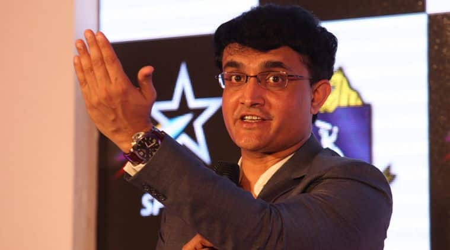

Inter Milan want to strike a swap deal with Juventus that will see Mauro Icardi head to Turin and Paulo Dybala arrive at the San Siro.
Napoli star Lorenzo Insigne is also on the club's list of targets. (Tuttosport)
Insigne, who has previously been a Chelsea and Liverpool target, will be allowed to leave Napoli this summer for around £60m after falling out with the club's supporters in the aftermath of their Europa League defeat to Arsenal. (Corriere dello Sport)
Roma continue to hold talks with Antonio Conte about taking charge this summer. The former Chelsea boss has also been heavily linked with AC Milan and Inter, but Roma have not given up hope of luring him to the capital. (Corriere dello Sport)

Cristiano Ronaldo reached a titles milestone as Juventus clinched an eighth-consecutive Serie A crown with a 2-1 victory over Fiorentina, as they came from behind following a below-par first half.
In the process, Ronaldo become the first player to win each of the Premier League, La Liga and Serie A titles.
The Bianconeri had been heavy favourites to win the title this season following the signing of Ronaldo in the summer and it appeared a matter of when rather than if as they remained unbeaten for the first seven months of the season until a 2-0 loss at Genoa ended that run on March 17.
Last weekend, they had the opportunity to wrap up the title but suffered a shock loss at SPAL and it appeared the were ready to blow a second opportunity to clinch the title as they fell behind early on at the Allianz Stadium.
Defender Nikola Milenkovic gave the visitors the lead after just six minutes and Vincenzo Montella's side missed a host of clear-cut chances as they hit Juve on the break before Alex Sandro equalised with a stunning header on 37 minutes.
Fiorentina winger Federico Chiesa, who had earlier hit the post then struck the bar, while Giovanni Simeone also came close -- but was flagged offside.
But, while not looking at their absolute best, Juventus were much improved after the interval and took the lead when Ronaldo's cross was diverted past his own goalkeeper by La Viola captain German Pezzella on 53 minutes.
Juventus are 20 points clear of second-place Napoli with five games left to play and extend their record of 35 Serie A titles, while they are first team in Europe's top five leagues to win the championship in eight consecutive seasons.
Meanwhile, Juventus' Women made it a double celebration as they, too, won Serie A for a second consecutive season.
A 3-0 victory over Verona ensured they finished a point clear of second-place Fiorentina, with AC Milan -- who were also in contention going into the final day -- four points further back after losing at home by Firmauto Valpolicella.

The current Indian team’s strength makes them “favourites” going into any competition leave alone World Cup where they are sureshot semifinalists alongside Australia, England and Pakistan. The former India captain, who led the team to the 2003 World Cup finals expects that current round robin format will be one of the most “keenly contested” tournament.
“My pick for the four semifinalists spot would be India, Australia, England and Pakistan. India are one of the title-contenders of course,” Ganguly told PTI in an interview. Ten teams will be competing in the ODI cricket’s quadrennial extravaganza in a round robin format where every team plays each other before the semifinals.
“It’s going to be one of the most keenly contested World Cups. Indian team is so strong that in any tournament they will be favourites. This World Cup will probably be the best format. The best four teams will reach the semi-finals playing all the teams. There are no easy teams,” said Ganguly.
Kuldeep Yadav’s four wickets in nine games is not something that will affect his performance in the World Cup. “He will get wickets in the World Cup, don’t worry. He’s a superb bowler,” Ganguly said without reading much into Kuldeep’s below-par show for KKR.
The Prince of Kolkata is now playing a pivotal role in the turnaround of Delhi Capitals in search of an elusive IPL title. “I don’t see the challenges as tough, I just find a way to try and make it work. Sometimes it works, sometimes it does not. It’s a great honour to help these players and turn around a team which has not done well in the past,” the Delhi Capitals advisor said.
Delhi Capitals are occupying second place behind Chennai Super Kings in the leaderboard as they need one win from three matches to seal their playoff berth. “Delhi is a mixture of youth and experience. I can only advice so the credit should go to players who actually execute it.”
The team has two legends at the helm with Ganguly working alongside his former Aussie counterpart Ricky Ponting who is the head coach of the franchise. “We are great friends for a long period of time. I was the runners-up in the (2003) World Cup which he had won. He has great experience. It’s been a pleasure working with him. The way he adjusts to player’s needs is a remarkable experience. He’s a fantastic coach,” Ganguly said showering praise on Ponting.
Asked about the glitz and glamour of the IPL, Ganguly said: “IPL is pure sport. The glitz and glamour is just 15 per cent. 85% is actually professional, hard cricket. Players are under enormous pressure to perform.”
Designed by Soham Choudhuri